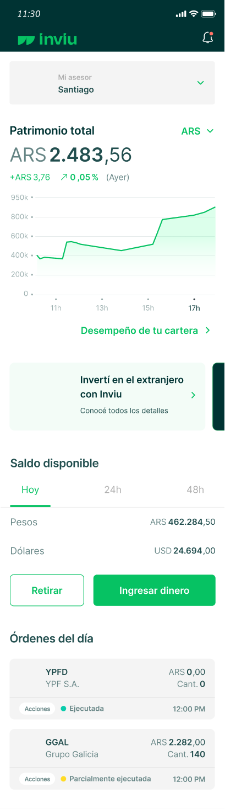
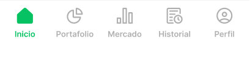
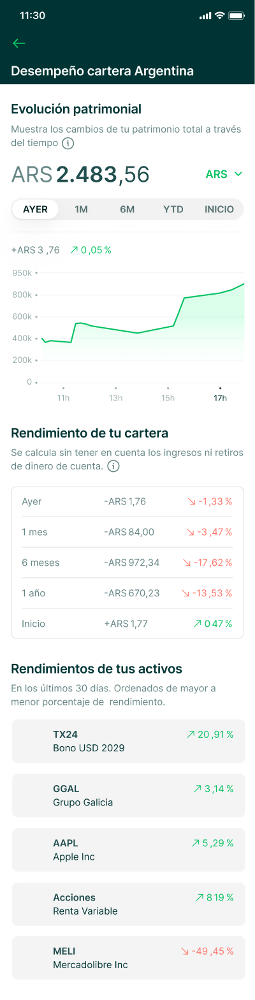
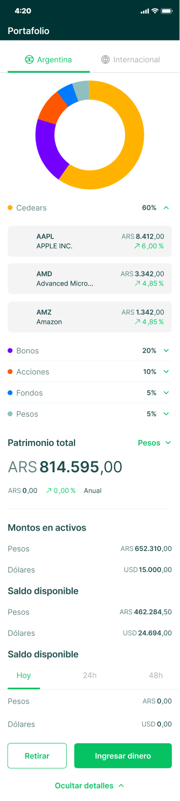
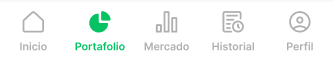
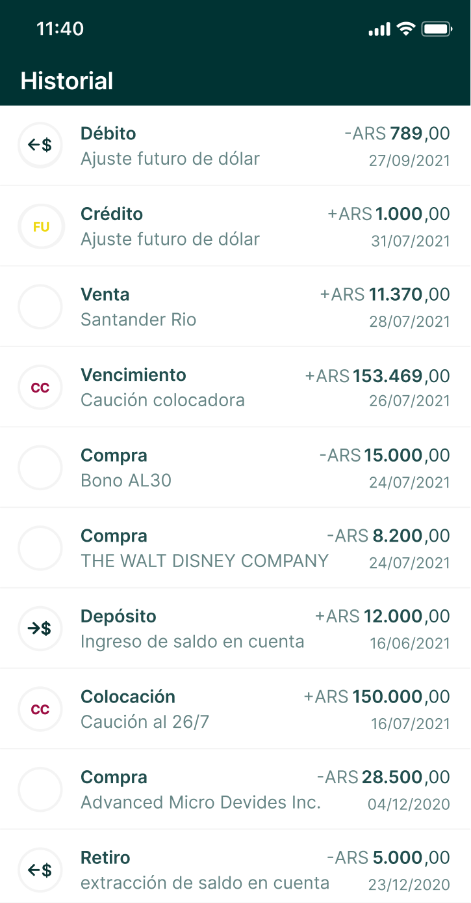
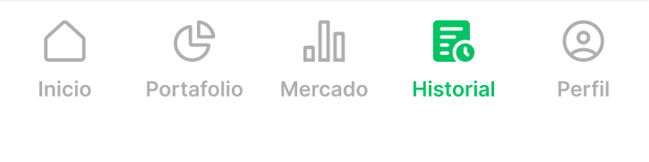
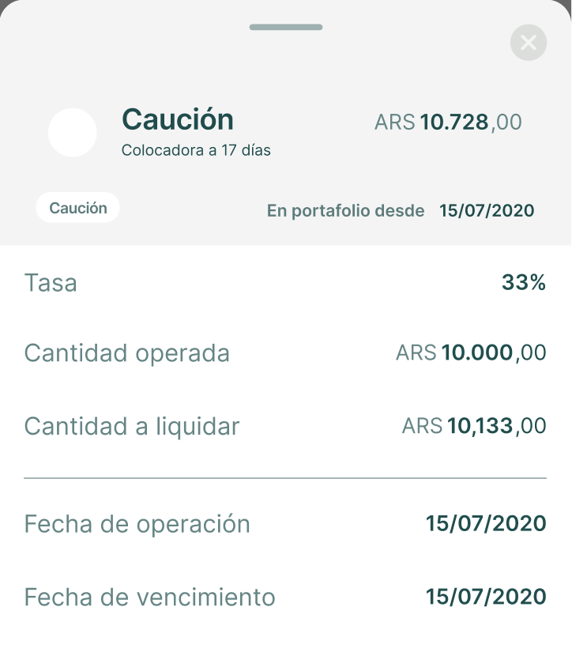
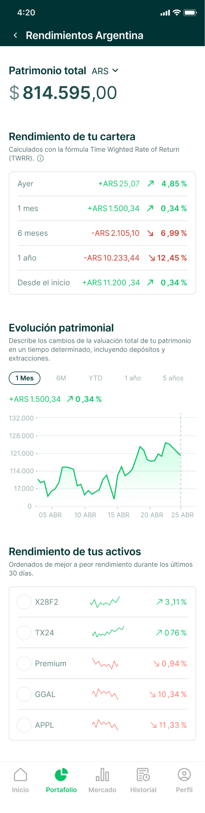

Diseñé la experiencia del portfolio para inversores.
Lideré la experiencia de cartera de inversores en la app móvil y la web, dentro de un equipo ágil.
Diseñé soluciones para dos segmentos de clientes: asesores financieros e inversores.
Probá el prototipo







Navegá la app como lo haría un inversor.
En Inicio, tocá Desempeño de tu cartera para ver la evolución y el rendimiento; volvé con la flecha.
Usá la barra de abajo para ir a Portafolio y a Historial.
En Portafolio, tocá AMD para abrir la hoja de detalle del activo.
Las pantallas se desplazan, como en el teléfono.
El portafolio
Portafolio · Argentina
Toda la cartera en una sola pantalla, organizada por tipo de activo.
Composición: un gráfico de dona y la lista de tipos de activo (Cedears, Bonos, Acciones, Pesos, Futuros) con el porcentaje de cada uno.
Cada tipo se despliega para ver los activos que lo componen, como el futuro de dólar.
Garantías: una etiqueta marca los activos que tienen unidades en garantía.
Patrimonio total, montos en activos y saldo disponible, en pesos y en dólares.
Pestañas para separar la cartera de Argentina y la Internacional.
El detalle de cada activo
Al tocar un activo se abre una hoja con su detalle. La estructura se repite (encabezado con el activo, su tipo y su variación, y debajo sus datos), pero los datos cambian según cómo funciona cada tipo de activo.
CEDEAR · Unidades, precio promedio, rendimiento y acciones de compra y venta

Caución · Tasa, monto a liquidar y vencimientoFuturo · Precio operado, última variación y vencimiento
El rendimiento

Rendimientos · Argentina
Cuánto rinde la cartera, en cada período y por activo.
Rendimiento de la cartera por período (ayer, 1 mes, 6 meses, 1 año, desde el inicio), en monto y porcentaje, calculado con la fórmula Time Weighted Rate of Return (TWRR).
Evolución patrimonial: cómo cambia la valuación total, incluyendo depósitos y extracciones, con filtros de período.
Rendimiento de cada activo en los últimos 30 días, ordenado de mejor a peor, con un mini gráfico de tendencia.
El historial
Historial
Todos los movimientos de la cuenta en una misma lista, sin importar el activo.
Cada fila dice qué pasó (compra, venta, vencimiento, colocación, depósito, retiro, ajuste), sobre qué activo, el monto y la fecha.
Un ícono identifica el tipo de activo o de movimiento.